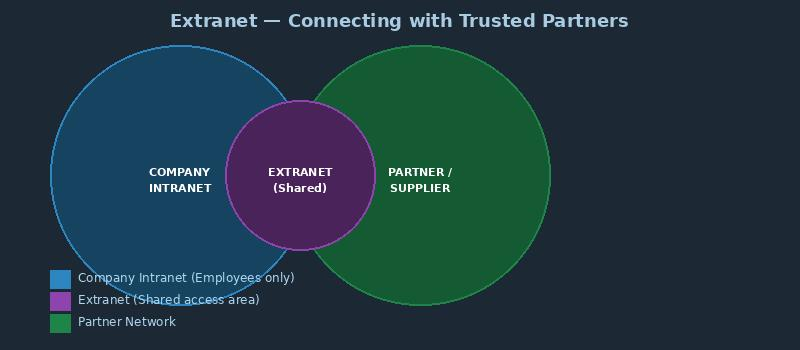

What is an Extranet?

An extranet is a controlled private network that allows access to partners, vendors, suppliers, or customers - while still keeping internal information secure. It sits between an intranet and the public Internet.
Companies use extranets to collaborate with business partners, share inventory data, or provide customer support portals.
Key facts:
- Extends an organization's intranet to selected outsiders
- Requires login credentials and often uses VPNs for security
- Improves collaboration with business partners
- Examples: supplier portals, customer account management, partner dashboards